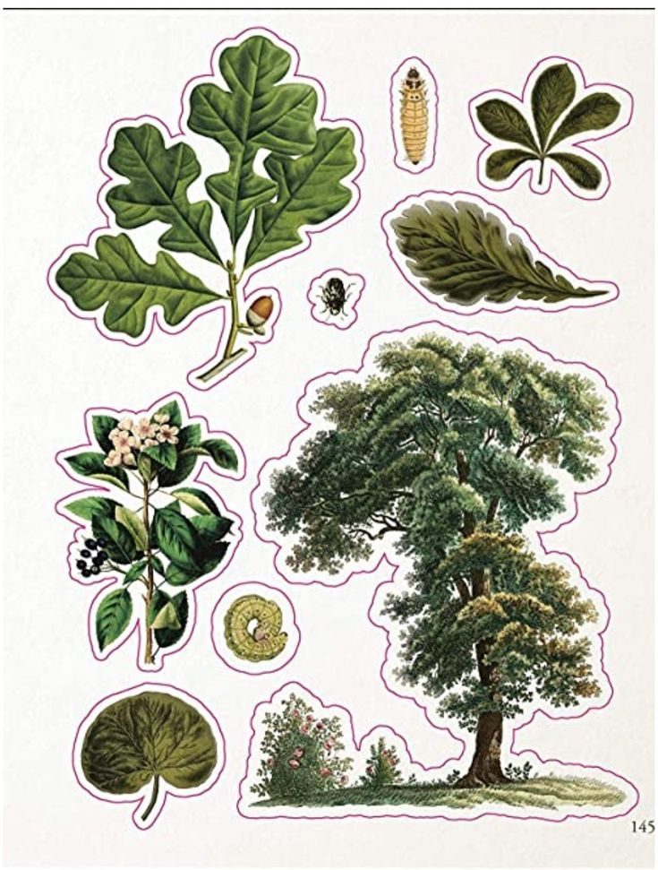
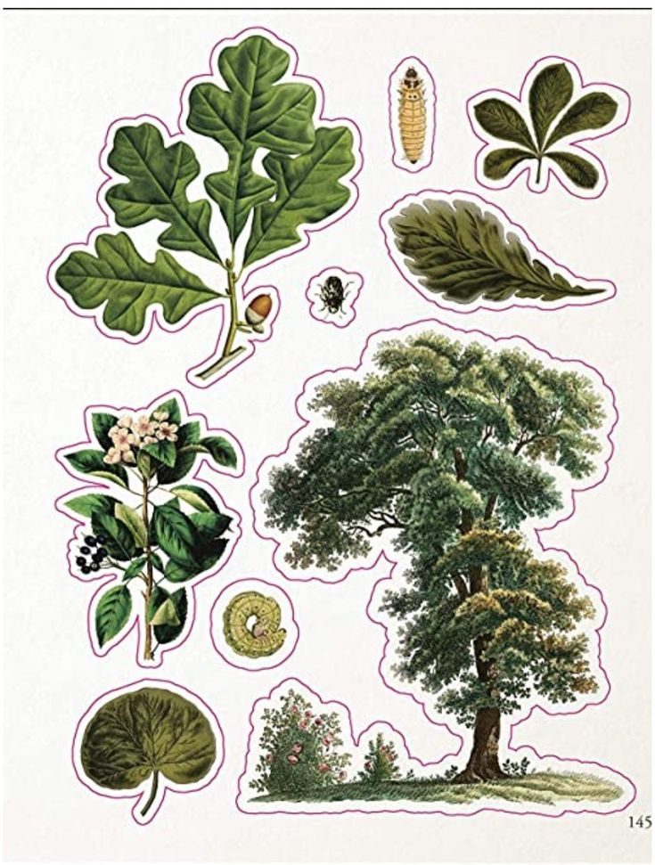
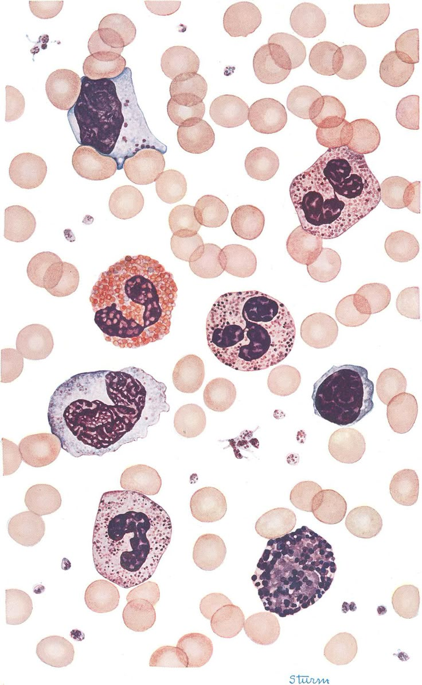
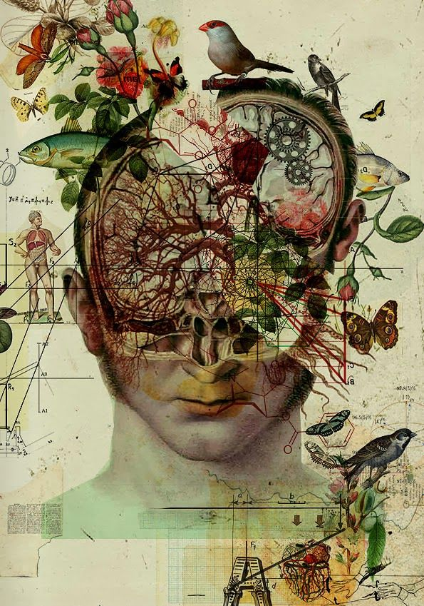

🍀O Mundo das Plantas
As plantas são seres vivos fundamentais para a vida na Terra. Elas realizam a fotossÃntese, produzindo oxigênio e alimento para outros seres vivos.
 Leia mais sobre plantasAs plantas são seres vivos fundamentais para a vida na Terra. Elas realizam a fotossÃntese, produzindo oxigênio e alimento para outros seres vivos.
 Leia mais sobre plantasOs animais vivem em diferentes ambientes, como florestas, oceanos e desertos. Cada espécie se adapta ao seu habitat de formas incrÃveis.
 Saiba mais sobre animais
Saiba mais sobre animais
As células são a base da vida e estão em todos os seres vivos. Algumas não têm núcleo (procariontes) e outras têm núcleo e organelas importantes (eucariontes), como as mitocôndrias, que produzem energia.
A genética mostra como nossas caracterÃsticas são passadas de geração em geração. O DNA contém todas as instruções da vida, e os genes definem caracterÃsticas como cor dos olhos e do cabelo. Cada gene pode ter alelos, pequenas variações que tornam cada pessoa única.
 Leia mais sobre biologiaA biologia é cheia de fatos surpreendentes! Por exemplo, alguns animais podem regenerar partes do corpo, e algumas plantas podem se mover lentamente para buscar luz.
 Descubra mais curiosidades